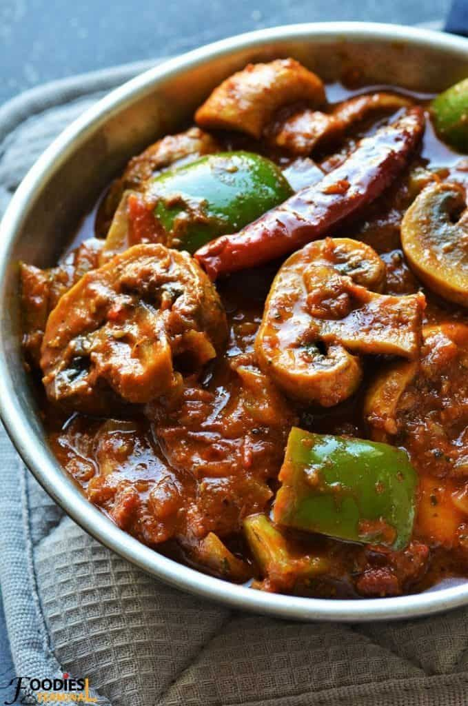

Mushroom
Ingredients
- 250 g fresh mushrooms, cleaned and sliced
- 2 medium onions, finely chopped
- 2 medium tomatoes, finely chopped or pureed
- 1 tsp ginger-garlic paste
- 1-2 green chillies, finely chopped
- 1/2 tsp cumin seeds
- 1/2 tsp turmeric powder
- 1 tsp red chilli powder
- 1 tsp coriander powder
- 1/2 tsp cumin powder
- 1/2 tsp garam masala
- 1/2 tsp kasuri methi
- 2 tbsp fresh coriander, finely chopped
- 2 tbsp oil
- 1/2 cup water
- Salt to taste
Instructions
- Clean the mushrooms thoroughly and wipe them dry. Slice them into medium-sized pieces and keep them aside.
- Heat oil in a pan over medium heat. Add cumin seeds and let them splutter.
- Add the chopped onions and sauté until they become soft and lightly golden.
- Add ginger-garlic paste and green chillies. Sauté for about a minute until the raw aroma disappears.
- Add the tomatoes along with turmeric powder, red chilli powder, coriander powder, cumin powder, and salt. Mix everything well.
- Cook the masala until the tomatoes become soft and the oil begins to separate from the mixture.
- Add the sliced mushrooms and mix well so that they are evenly coated with the masala.
- Cook the mushrooms for 5-7 minutes. They will release some water and become tender as they cook.
- Add water according to your preferred gravy consistency. Cover and simmer for another 3-4 minutes.
- Add garam masala and crushed kasuri methi. Mix gently and cook for another 1-2 minutes.
- Garnish with freshly chopped coriander and turn off the heat.
- Serve hot with roti, naan, paratha, or steamed rice.
